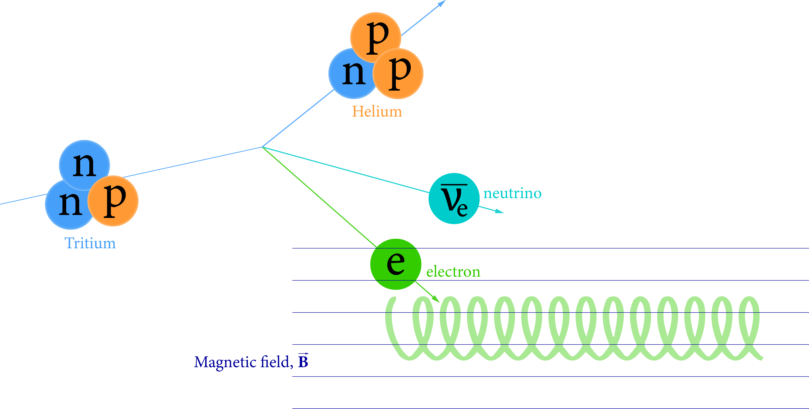
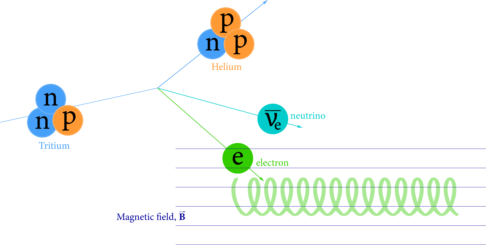

Razu Mohiuddin
Graduate student in physics
Hello!
I am an experimental particle astrophysics doctoral student at Case Western Reserve University. I'm currently working in the Monreal Lab and the Project 8 collaboration, pursuing my research interests in neutrino physics.
Research

The Project 8 experiment aims to measure the mass of the
neutrino, a subatomic particle with extremely low mass,
through the analysis of the beta decay of tritium atoms. The
experiment uses a novel technique called cyclotron radiation
emission spectroscopy (CRES) to measure the energy spectrum of
electrons emitted in the radioactive decay of tritium. By
measuring the energy distribution of the emitted electrons,
Project 8 aims to determine the absolute mass of neutrinos
with unprecedented precision.
 Within the Project 8 Collaboration, I am working in a few different projects. As part of the machine learning team, we implemented deep convolutional neural network autoencoder (U-Net based) to segment highly class-imbalanced spectrogram images, improving efficiency over traditional methods by more than 20%. Currently, I am employing natural language processing (NLP) techniques in machine learning to identify patterns within noisy signals, thus enabling low power signal detection. I am also working with resonant cavity mode filtering and manipulation.
Check out recent publications in the following section. Past work In the summer of 2024, I interned at Roche Diabetes Care Inc. in the Mathematics, Algorithms & Data Sciences Department, focusing on algorithms and advanced analytics. My responsibilities included:
In the summer of 2024, I interned at Roche Diabetes Care Inc. in the Mathematics, Algorithms & Data Sciences Department, focusing on algorithms and advanced analytics. My responsibilities included:
I worked with the Gravitational Wave International Committee (GWIC) and Community of Physics in the past.
 Within the Project 8 Collaboration, I am working in a few different projects. As part of the machine learning team, we implemented deep convolutional neural network autoencoder (U-Net based) to segment highly class-imbalanced spectrogram images, improving efficiency over traditional methods by more than 20%. Currently, I am employing natural language processing (NLP) techniques in machine learning to identify patterns within noisy signals, thus enabling low power signal detection. I am also working with resonant cavity mode filtering and manipulation.
Check out recent publications in the following section. Past work
- Using real-world data to develop virtual patient models
- Developing models for use in diabetes management tools for patients
- Assessment of novel techniques to reduce external dependencies
- Actively engage with the project team to discuss the project goals, tasks and set priorities
- Perform independent data analysis and model building based on team priorities
- Report on findings to the project team, department and R&D
I worked with the Gravitational Wave International Committee (GWIC) and Community of Physics in the past.
Publications
"Deep learning based event reconstruction for cyclotron radiation emission spectroscopy"
Machine Learning: Sci. Technol.5 (2024) 025026
"Tritium Beta Spectrum and Neutrino Mass Limit from
Cyclotron Radiation Emission Spectroscopy "
PhysRevLett.131 (2023) 102502
"SYNCA: A Synthetic Cyclotron Antenna for the Project 8
Collaboration" JINST 18 (2023) 01, P01034
"Deep Learning based CRES track and event reconstruction in
Project 8" APS DNP (2022)
"The Project 8 Neutrino Mass Experiment" 2022 Snowmass |
arXiv: 2203.07349
"Viterbi decoding of CRES signals in Project 8" New
J.Phys. 24 (2022) 5, 053013
"Bayesian analysis of a future β decay experiment's
sensitivity to neutrino mass scale and ordering" Phys.Rev.C
103 (2021) 6, 065501
CHECK ALL PUBLICATIONS
About
I am a graduate student in Physics at Case Western Reserve
University, where I am conducting research in the exciting field
of neutrino physics.
In addition to my academic pursuits, I am an avid photographer with a deep passion for capturing the beauty of landscapes and architecture, as well as people/pets. During my free time, if I am not working on a home or car project, I like to dedicate my time acquiring new skills. I enjoy immersing myself in reading, exploring new realms through video games, and staying active through sports like tennis, soccer, and basketball.
Contact
Feel free to contact me by emailing at
Mailing Address
CWRU Physics, Rockefeller Building
Rock 118A
2076 Adelbert Road
Cleveland, OH 44106
Rock 118A
2076 Adelbert Road
Cleveland, OH 44106